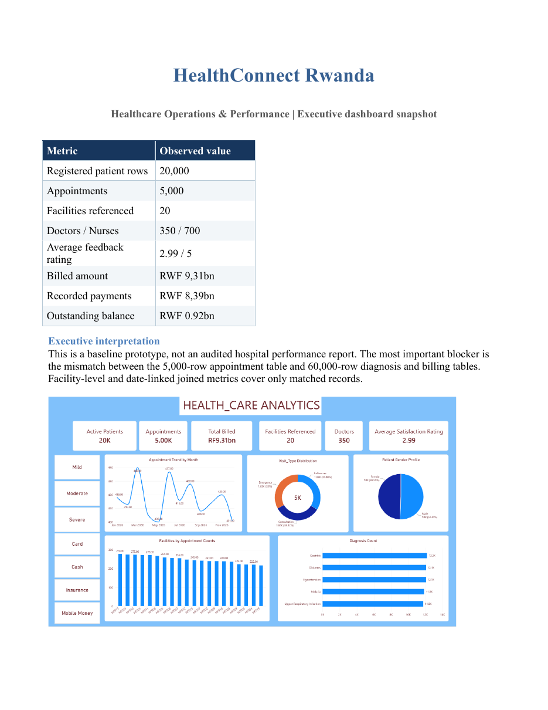

I explore data, build analytical models, and communicate practical business insights. This portfolio presents my end-to-end healthcare analytics project for HealthConnect Rwanda, from SQL analysis to Power BI reporting and executive recommendations.
I use structured analysis to understand what is happening, why it matters, and what an organization should do next. My featured work combines database querying, dashboard design, data interpretation, and business communication.
My approach
A practical analytics workflow, from raw records to an actionable story.
01
Understand the question
Translate business objectives into measurable questions and define the right level of analysis.
02
Prepare and validate data
Inspect structure, quality, keys, relationships, missing values, and consistency before trusting metrics.
03
Analyze and visualize
Use SQL and Power BI to summarize patterns, compare segments, and make findings easier to interpret.
04
Communicate decisions
Explain implications, recommend actions, and clearly disclose assumptions and data limitations.
Portfolio focus
Areas demonstrated in the HealthConnect project.
Business intelligence
KPIs, dashboard pages, filters, and visual storytelling.
SQL analysis
Aggregation, joins, ranking, date analysis, and data validation.
Healthcare operations
Patient demand, appointments, workforce, finance, and feedback.
Executive reporting
Findings, recommendations, risks, and implementation priorities.
02 / Featured case study
HealthConnect Rwanda
Healthcare Operations & Performance Analytics. An end-to-end portfolio project built around patient, appointment, diagnosis, billing, payment, insurance-claim, feedback, staffing, and facility records.
Patient records
20,000Registered patient rows
Appointments
5,0002026 appointment extract
Total billed
RWF 9.31bn60,000 billing rows
Feedback rating
2.99 / 5Across 21,064 feedback rows
Power BI · 7 report pagesSQL · 40 query topics13-slide executive deck4-page business insights reportPDF dashboard snapshot
Project overview
The project examines healthcare operations and performance through linked datasets. Its goal is to give decision-makers a view of patient demographics, appointment demand, diagnoses, financial activity, workforce distribution, patient feedback, and facility resources.
Business problem
Healthcare leaders need a consistent view of service demand, financial activity, patient experience, and operational capacity to support evidence-based planning.
Analytical objective
Consolidate multiple operational files into a structured analysis, build useful metrics, and turn the results into management recommendations.
Tools and artifacts
MySQL SQL scripts, Power BI report (.pbix), dashboard PDF, executive PowerPoint, and written business insights report.
Reporting standard
Distinguish source totals from matched-subset metrics; disclose when a KPI is provisional or unavailable.
Power BI dashboard walkthrough
The HealthConnect executive dashboard presents the project KPIs, patient profile, appointment patterns, financial activity, and operational indicators.

Executive dashboard · headline KPIs and appointment overview
Registered patient profile, gender profile, age groups, chronic-condition distribution, insurance distribution, blood groups, and marital status.
3. Clinical Analytics
Diagnosis counts and severity distribution, intended to summarize the clinical records available in the extract.
4. Financial Analytics
Billing status, payment methods, insurance-claim status, and financial summaries.
5. Operations
Staffing and resource indicators, including doctor specialty, appointments by doctor, and administrative staff by department.
6. Patient Experience
Rating distribution, feedback matched to appointments, and feedback comment categories.
7. Page 1
An additional page exists in the PBIX. Its visible display name is still the default “Page 1” and should be renamed or removed before final presentation.
SQL analysis: 40 query topics
The SQL file is organized into four analytical domains. Select a domain to review the questions covered.
Patient analysis · 1–10
Patient records, gender, geography, age over 65, chronic conditions, insurance-coded patients, blood group, youngest/oldest patients, duplicate phone numbers, and average age.
Appointment analysis · 11–20
Monthly appointments, busiest facilities, department workload, doctor workload, referrals, emergency appointments, average appointments per doctor, province patterns, facility patient volume, and consultation periods.
Clinical analysis · 21–30
Top diagnoses, lab tests, prescriptions, admission duration, severity, lab utilization, prescription trends, referral destinations, admission rate by diagnosis, and clinical workload by department.
Financial analysis · 31–40
Revenue by facility, department and service, insurance claims, outstanding payments, average bill, monthly revenue, payment methods, top revenue facilities, and facility ranking.
Example · Monthly appointment volume
SELECT
DATE_FORMAT(`Date`, '%Y-%m') AS YearMonth,
COUNT(*) AS TotalAppointments
FROM appointments
GROUP BY DATE_FORMAT(`Date`, '%Y-%m')
ORDER BY YearMonth;
Example · Billed amount by facility (matched appointments only)
SELECT
a.FacilityID,
SUM(b.Amount) AS Billed_Amount,
COUNT(DISTINCT b.BillingID) AS Bill_Count
FROM billing b
JOIN appointments a
ON b.AppointmentID = a.AppointmentID
GROUP BY a.FacilityID
ORDER BY Billed_Amount DESC;
Key findings in the supplied reports
These values are transcribed from the uploaded business insights report and executive dashboard snapshot. They are source-level observations, not independently audited hospital-wide totals.
01
Patient profile
20,000 patient rows: 10,090 male and 9,910 female. Stored mean age is 45.0 years; DOB-derived mean age as of 20 October 2026 is 45.8 years.
02
Chronic conditions
14,929 patient records have a chronic condition recorded; 5,071 are explicitly marked “None,” meaning no chronic disease under the source definition.
03
Appointment demand
5,000 appointments dated 1 January to 28 December 2026. Visit types: 1,694 follow-ups, 1,656 consultations, and 1,650 emergency visits. 4,443 distinct patients appear in appointments.
04
Financial activity
Billing rows total RWF 9,309,401,961; payment rows total RWF 8,389,454,556. The RWF 919,947,405 difference is a provisional balance proxy, not audited receivables.
05
Patient experience
Average feedback rating is 2.99 out of 5 across 21,064 feedback rows. Only a subset of feedback rows can be linked to the appointment extract.
06
Staff and assets
350 doctors, 700 nurses, 50 pharmacists, 40 laboratory scientists, 30 radiographers, and 80 administrative staff. The source lists 2,000 beds (all marked Available), 400 rooms, and 200 equipment records.
Visit type mix
Share of the 5,000 appointment records in the report.
The portfolio source package includes the following original artifacts. They are described here rather than embedded as downloads inside this preview.
HC.pbix
Power BI report with seven pages: Executive Dashboard, Patients Analytics, Clinical Analytics, Financial Analytics, Operations, Patient Experience, and a default Page 1.
Power BI source
HealthConnect_Dashboard.pdf
Three-page executive dashboard snapshot with metric summary, patient profile, finance, and operational interpretation.
3 pages
Executive Presentation.pptx
13-slide executive readout covering scope, patient profile, age groups, appointment demand, visit mix, diagnosis, finance, feedback, geography, operations, and priorities.
13 slides
Healthcare Business Insights.docx
Executive summary, dataset observations, seven business recommendation themes, and conclusion.
Word report
Healthcare Business Insites.pdf
Four-page PDF version of the business insights report.
4 pages
HealthConnect_SQL_40_Queries.sql
Forty numbered analytical query topics grouped into patient, appointment, clinical, and financial analysis.
SQL script
03 / Business communication
What the analysis means
Business insight is more than a chart. Each observation should connect to a decision, with the evidence and uncertainty made clear.
Business questions addressed
Questions supported at least partially by the supplied records.
Patient demand
High
Department load
Good
Staff distribution
Partial
Patient satisfaction
Partial
Revenue activity
Partial
Questions needing more data
The source reports cannot reliably answer these yet.
!
Insurance company revenue
Requires verified insurer-to-billing allocation and claim/payment reconciliation.
!
Hospital expansion needs
Requires occupancy, waiting time, capacity, admission, and service-hour data.
!
Operating cost reduction
Requires salary, procurement, utilities, maintenance, and other operating expenses.
!
Regional investment
Requires validated facility geographies, population, access, and capacity indicators.
04 / Toolkit
Skills demonstrated
Capabilities evidenced by the uploaded project work. This list describes the techniques used in the artifacts, not external certifications.
▤
SQL & MySQL
Joins, aggregation, grouping, subqueries, date functions, window ranking, and data checks.
▥
Power BI
Report pages, KPI cards, slicers, age groups, charts, and business-facing dashboards.
◫
DAX & metrics
Measures and calculated columns for patient, appointment, finance, and demographic reporting.
▧
Data modeling
Patient, appointment, diagnosis, billing, payment, feedback, and dimension relationships.
⌕
Data quality
Key matching, duplicate detection, null checks, reconciliation, and limitation reporting.
⌁
Data visualization
Trend, composition, ranking, distribution, and KPI visuals.
▣
Business analysis
Business questions, KPI definitions, operational interpretation, and recommendations.
✎
Communication
Executive presentation, written report, narrative, and actionable next steps.
05 / Recommendations
From evidence to action
The business insights report recommends a practical improvement agenda for patient experience, finance, appointments, workforce, facilities, data quality, and clinical systems.
01 · Patient experience
Raise satisfaction
Review low feedback scores, investigate complaints, improve communication, and reduce waiting times. Track rating and response volume together.
02 · Financial management
Reconcile billing and payments
Introduce regular reconciliation, monitor pending and partially paid bills, and use reminders only after balances are verified.
03 · Appointment operations
Balance demand and capacity
Monitor monthly and departmental appointment demand, review peak periods, and align schedules with patient volume.
04 · Workforce
Allocate staff against workload
Compare staff by facility and department with appointment demand. Add shift, hours, and acuity data before judging efficiency.
05 · Facilities
Measure real utilization
Capture actual bed occupancy, room usage, equipment availability, and maintenance history before prioritizing expansion.
06 · Data governance
Improve patient records
Standardize patient identifiers, validate contact information, resolve duplicate records, and govern age calculations.
07 · Clinical systems
Capture missing transactions
Implement linked laboratory orders, prescriptions, admissions, discharges, referrals, and outcomes.
08 · Management reporting
Establish KPI ownership
Define each metric, its source, owner, refresh cycle, denominator, and quality checks before operational targets are set.
Suggested implementation sequence
Phase 1 · Validate
Reconcile IDs and finance; agree definitions; confirm facility master and dates.
Phase 2 · Instrument
Capture bed occupancy, waiting times, staff shifts, costs, and clinical transactions.
Phase 3 · Operationalize
Assign KPI owners, refresh dashboards, and review trends with facility managers.
Phase 4 · Improve
Run targeted pilots, measure outcomes, and scale interventions with verified evidence.
06 / Contact
Let's turn your data into your next business decision.
Interested in data analytics, reporting, or business intelligence projects? Reach out to discuss a collaboration.